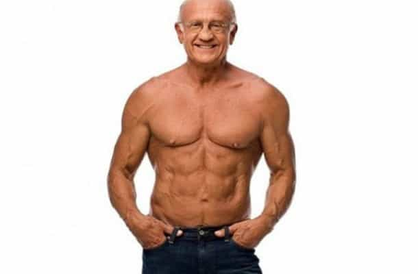
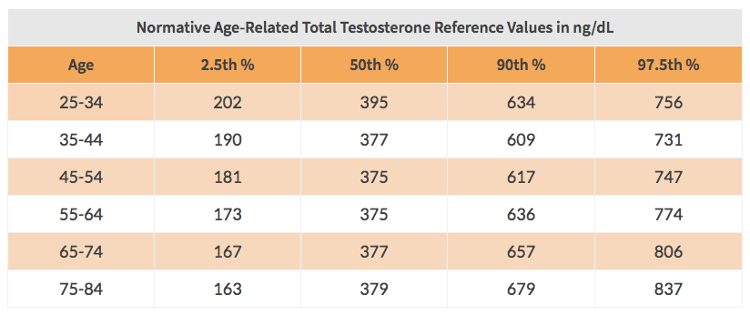
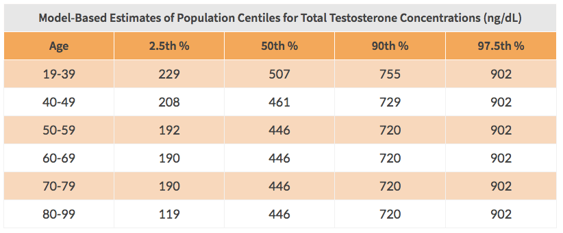

Are you wondering what it is? The lie that most men believe about testosterone that is being peddled by doctors, trainers, nutritionists, and the mainstream media alike? I’ll give you a hint: it’s what Big Pharma wants you to believe so that you become a customer for life. This lie was first brought to light seven years ago…
Declining Testosterone: Not Inevitable With Age?

In 2011, a team of Australian researchers set out to identify the relationship between aging and testosterone levels. They recruited 325 men between the ages of 40 and 97 years old who had self-reported excellent health and no symptoms to complain of. Nine blood samples were collected from each of these men over a period of three months. When they looked at the entire sample of data, researchers found that age failed to have an influence on testosterone levels.
Here’s what lead researcher of the study, Dr. David Handelsman, had to say:
By itself, age does not cause a lower testosterone in healthy men. It’s more likely that lowering of testosterone is a consequence of illnesses men acquire as they get older, like cardiovascular disease and obesity.
Although older age is correlated with lower testosterone levels, Handelsman and his team made the case that older age is not the cause of declining testosterone.
As a skeptic of this research, you might say that the sample of 325 men represents only a tiny segment of the population and that the findings don’t apply to you. You might click on the link to the study and realize that the findings haven’t even been published in a peer-reviewed journal and were merely presented at a medical conference. In both instances, you’re right. But keep reading…
Age Has No Effect On Testosterone Levels: Fact Or Fiction?

Browsing through the archives, I came across a 2014 study in which a group of researchers set out to derive and publish – for the first time in history – an age-related model for total testosterone levels in healthy men. They extracted the data from 13 previously published studies with a sample size spanning over 10,000 men between the ages of 0-101. This data was then used to plot out the average values for total testosterone according to age based on the 1st to 99th percentile in nmol/L.
Definitely check out the study in its entirety for a more detailed account of the results, but I went ahead and averaged out the results based on 10-year age increments, converted nmol/L to ng/dL, and broke it down based on 2.5th, 50th, 90th, and 97.5th percentiles:

What do you see?
Like Handelsman found in 2011, age fails to have a significant influence on testosterone. Could it really be possible that age and testosterone levels are completely unrelated? That aging men can maintain optimal levels of testosterone without relying on expensive (and potentially dangerous) medical treatments?
If you’re still skeptical, check out the results from this 2017 study that gathered blood samples from more than 9,000 men living across both the US and Europe:

Yet again, age fails to have an influence on testosterone.
As a man in my twenties, I actually found myself on the other side of the fence. Back in 2016 – when I was lazy, depressed, skinny-fat, beta, and blue-pill – I thought that sub-optimal testosterone was only something older guys had to worry about. But as the research reveals, age doesn’t matter and any man, regardless of age, can have sub-optimal T. What it really comes down to is your mentality and your decisions regarding how you eat, train, sleep, and go about everyday life. Nothing more.
The Call To Action
Do you know your current total testosterone level? No? Then my call to action for you is to get your blood-work done so that you know where you stand relative to where you need to be moving forward. Every redpill man should strive for a total testosterone level above 700 ng/dL.
With testosterone prescriptions having more than tripled in the last decade, Big Pharma is cashing in hard on the so-called “low T” epidemic. But really, it is an epidemic of the blue pill – they are cashing in on our desire for instant gratification. Don’t fall for the “quick-fix” and always remember that anything that comes easy will leave you the exact same way.
Is natural testosterone optimization a priority for you? Let’s talk.
Read More: The Decline In Testosterone Is Destroying The Basis Of Masculinity